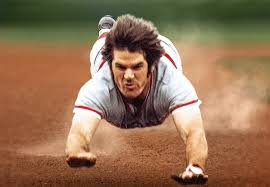
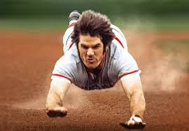

The Reds have had a total of members 39 inducted into the Major League Hall of fame and approximately 10 individuals who are primarily recognized as Cincinnati Reds. There are also four managers who have managed the Reds and one broadcaster.
The most significant Reds that have made the Hall of Fame include:
Johhny Bench was raised in a small town in Oklahoma and was taught to catch at an early age by his father. Bench made his Major League debut in 1967 at the age of only 19 years old. He would go on to play his entire 17 year career in Cincinnati and go on to be one of the greatest catchers in history. He was seen as the leader of the Big Red Machine and he helped lead the franchise to four National Pennants and two World Series titles. In his career Bench would win 10 Gold Glove awards due to his great catching skills. Along with this he had good power as he hit 389 home runs in his career. You can't talk about the best catchers in history without bringing up Johhny Bench.
Barry Larkin was born April 28, 1964 in Cincinnati, Ohio. Larking was an honor student and star athlete at Moeller high school in Cincinnati. He would make his Major League debut in 1985 and would have impressive numbers that season while only playing in 41 games. In 1990 Larkin would finish 7th in NL MVP voting and would play a big part in the Reds sweep of the Oakland A's in the 1990 World Series. In 1996 he would become the only shortstop in history to hit 30 homers and steal 30 bases in one season. Larkin would retire in 2004 after playing all of his 19 seasons as a Red. Barry Larkin's contribution to the Cincinnati Reds success in the 90s makes him one of the important players in Reds history.
Joe Morgan's major league career began with the Houston Astros in 1963 and he would play there for nine years with two All-Star game appearances. Morgan's career would change as he was traded to the Reds in November of 1971. In his first season with the Reds he would lead the league in walks, on-base percentage and runs scored. Joe would play a big part in the Big Red Machine and the back to back World Series championships in 1975 and 1976. He would make the all-star game in each of his eight seasons with the Reds. Morgan would leave Cincinnati as a free agent at 36 years old. He would still remain a key player on multiple teams like Houston once again, San Francisco, Philidelphia, and Oakland. Morgan would end his career with great numbers including 2,517 hits and a whopping 1,865 walks. Joe Morgan would unfortunately pass away in 2020, but his legacy will live on forever.
Tony Pérez's baseball career began when he left his job in a sugarcane factory in his native country of Cuba and signed a minor league contract with the Reds. Pérez became a positive influence to his teammates and especially other Spanish teamates. In 1967 Tony's career took a turn as he would collect 100-or-more RBI as he would for seven straight years. He would also be named MVP of the All-Star game as he hit a game winning home run in the 15th inning.Pérez would hit three home runs in the 1975 World Series against the Red Sox including a crucial two-run homer in the Reds game 7 victory. In his career Pérez would hit 20 or more homers and nine seasons and he would end his career with 379 home runs. Tony Pérez is known as one of the greatest run producers in the history of baseball and his role in the Big Red Macine.
Sparky Anderson's baseball career began with the Phillies in 1959 which was the only year he would play in the major's. Anderson's playing career would not amount to much but as a manager things would be much different. His managerial career began with Toronto in 1964 at the age of 30 and would manage four different minor league teams in the Cardinals and Reds organizations in the next four years. Sparky was named the manager of the Reds in 1969 and would lead them to the National League pennant a year later. He would lead the Reds to another pennant in 1972 and 1973. The Reds would then win back to back World Series championships in 1975 and 1976 under Anderson. Anderson would be dismissed by Cincinnati after the 1978 and he would be hired by the Detriot Tigers in 1979 who he would lead to a World Series five years later. Sparky would retire in 1995 with an overall record of 2,194-1,834 which makes him the sixth winningest manager in baseball history. Sparky Anderson is known for leading the Big Red Machine as well as leading the Tigers to a World Series as well. He is the only manager to win a World Series with both an American League team and National League team.

Marty Brennaman began his broadcasting career in 1964 at a North Carolina television station. His sports broadcasting career began in 1969 broadcasting American Legion baseball in Rowan County. He would do basketball play-by-play the next year for Virginia Squires. The next four years Marty would go on to win Virginia broadcaster of the Year awards each of those four years while covering the Mets AAA afilliate and William & Mary football. In 1974, the Reds selected him to take over play-by-play duties alongside veteran broadcaster Joe Nuxhall. Brennman would gain popularity for his legendary calls in victories and his signature quote "And this one belongs to the Reds!". Over the course of his career he would be named Ohio Sportscaster of the Year 12 times and he would win the Ford C. Frick Award from the Baseball Hall of Fame in 2000. He was also inducted into the Radio Hall of Fame in 2005. Brennaman retired in 2019 and will always been known as the voice of the Cincinnati Reds to many people.
 

While he may not be in the Hall of Fame and is one of the most controversial players in baseball history you can not talk about other Reds Hall of Famers without talking about Pete Rose. Pete Rose was born in Cincinnati, Ohio in 1941. Rose made his debut with the Reds in 1963 against the Pirates. He struggled in his first couple games but he turned things around quickly and would be named the National League Rookie of the Year. Pete was a great player in the 60s but his career took off in the 70s. In 1971 the Reds dominated the National League and they would capture four pennants and two World Series championships from 1970-1976. Pete would serve as the leadoff hitter for the Big Red Machine and led the team with his desire to win.
In 1978 he would become a free agent and sign with the Philidelphia Phillies who he would win a World Series with in 1980. Rose would then have a short stint with the Expos in 1984 but, he would be traded back to the Reds where he would become player-manager. On September, 11, 1985 Rose would get his 4,192nd hit against the Padres to give him the mosts hits by a player in baseball history. In 1989 allegations arose that he had bet on major-league games which is one of the leagues most sacred rules. Rose was found guilty and was banned from baseball for life which led to him being unable to be in Cooperstown unless the MLB decides to let him in. Pete rose unfortunately passed away in 2024 at the age of 83. While Pete Rose had plenty of controversy off the field he is one of the most important players in Reds history and will forever be one of the best baseball players in history.